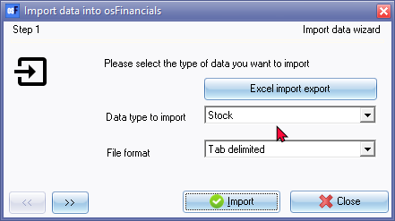
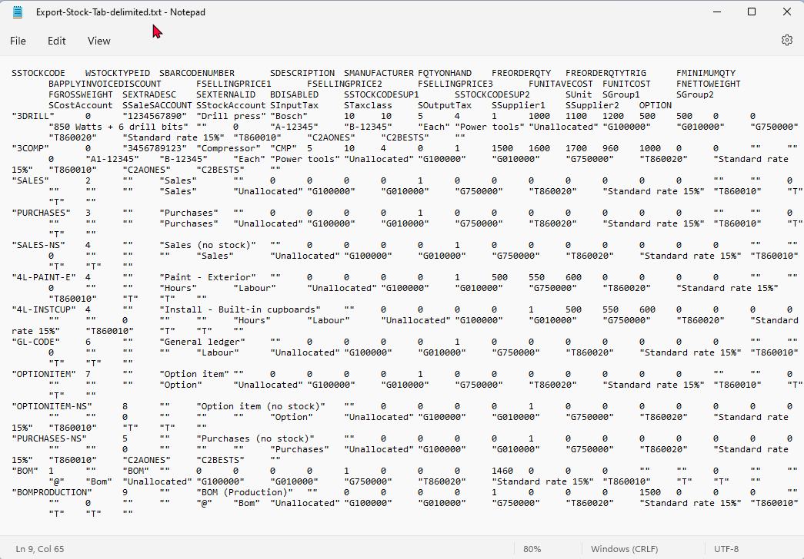
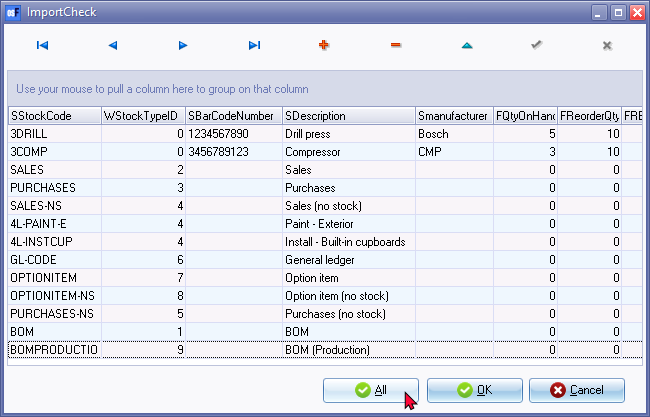
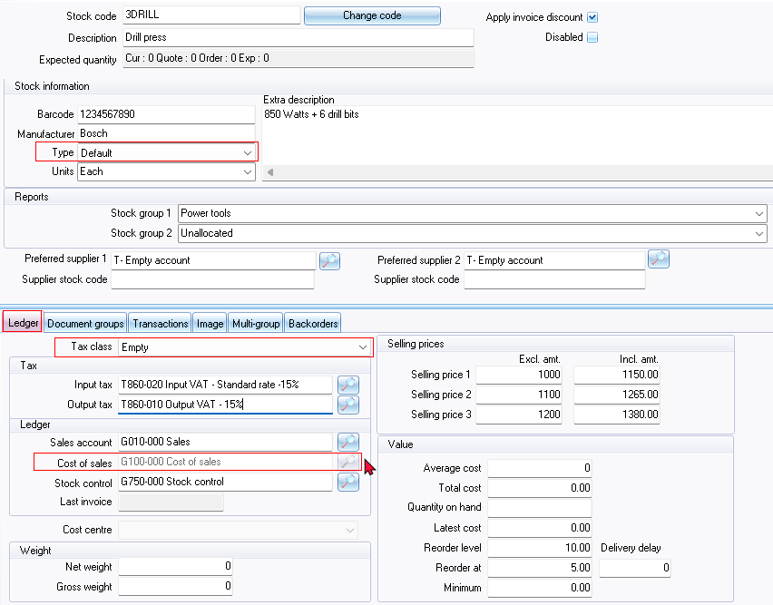

Import - Stock items (Setup ribbon)
This option will allow you to import data for Stock items from a valid file format into an existing Set of Books. To be able to import the data for Stock items, you need to have created a valid XML Database File format or a valid Lotus Spreadsheet file format on your system in Export (Setup ribbon).
To import Stock items:
- On the Setup ribbon, select Import. The "Import Data into osFinancials" screen is displayed:

- Select Stock as the "Data type to import".
- Select one of the following file types in which the data to import, is saved on your system:
- Tab delimited (recommended)
- Comma Separated Values (*.CSV)
- Tab Delimited (*.TXT)
- XML Database File (*.XML)
- Lotus Spreadsheet File (*.WK1)
- Click on the
 button to locate the data file. The following screen is displayed:
button to locate the data file. The following screen is displayed: 
- Click on the
 button to locate the data file.
button to locate the data file.
|
|
Optional - You may click on the View file button to view the file in your system's default app (program) associated with the exported file type. An example of the exported Tab Delimited text file is as follows:  |

- Click on the button. The following screen is displayed:

- Click on the Import button. The "ImportCheck" screen is displayed:
 - You may use the record buttons to add, delete or change the stock records on the "ImportCheck" screen. You may then click on the All or OK buttons to import the stock file.
- Once the import process is finished an information message is displayed:
"Data file import completed!"
- Click on the OK button.
- Go to the Reports ribbon and select Reports → Stock items → Stock item listing to check the stock items.
- Go to the Default ribbon and select Stock items to edit the stock items, if necessary.
Important notes - After import
Stock colours
If stock items were linked to Stock group 1 and or Stock group 2 and it is included in the exported file, the stock items will be linked to reporting groups for Stock group 1 and / or Stock group 2.
The colours will not be imported in the Stock grid. You need to set the reporting group colours for Stock group 1 and or Stock group 2 in Setup → Groups - Stock group 1 and / or Stock group 2.
Cost of sales settings
If cost of sales is not activated before you import stock items, the Cost of Sales account will be inactive when you edit stock items.

This reason for this is that Cost of sales is not activated in your Set of Books.
To activate Cost of sales:
- Create a batch type (journal type) for Cost of sales in Setup → Batch types and set the contra account to the "Cost of Sales" account.
- Activate Cost of sales in Setup → Stock information - Default tab
|
|
This is applicable to the "Default" (trading stock) and some other stock item types only. |

- Select the following:
- Create cost of sales – To activate cost of sales, select (tick) the "Create cost of sales" tick box.
- Cost of sales batch – Select the "Cost of sales" batch (journal) in which the cost of sales transactions will be posted.
- Use “Average cost” or “Latest cost” option.
|
|
The method you use to calculate the value of your stock is crucial for determining its impact on your profit and loss figures. It is important to consider whether to use the "average cost” or the“latest cost” method. If you are unsure which method to use, it is recommended that you seek guidance from your accountant. |
- Click OK.
- For these settings to take effect, you may need to go to Tools → Close active forms (Setup ribbon) or reopen the Set of Books. The Cost of sales lookup field will be active (for the "Default" stock item type or other stock item types which supports Cost of sales) on the Ledger tab of Stock items.
Tax classes
After Stock items is imported the Tax Classes will be empty.
The Tax Classes tab in the Stock information section enables you to create and manage account classes/tax classes. Tax classes consist of five (5) accounts that are associated with the Ledger tab of stock items on the Default ribbon.
You may add Tax Classes stock item type for each of the Tax (VAT/GST/Sales tax) items for example, standard rate, capital goods, zero rated, exempt goods, etc.) which is prescribed by your tax authority.
You may also use Tax Classes to assign various stock items to various Sales accounts, Cost of Sales accounts and Stock control accounts.
When you link a stock item to a tax class, it automatically populates the Input Tax, Output Tax, Sales, Cost of Sales, and Stock control account fields on the Ledger tab for that specific stock item. This eliminates the need to manually select these accounts for each individual stock item.
By utilising tax classes, the Lookup button on the Ledger tab of stock items is disabled, as the tax class already defines the appropriate accounts for taxation and accounting purposes. This simplifies the process of assigning accounts to stock items, ensuring consistency and accuracy in tax calculations and financial reporting.